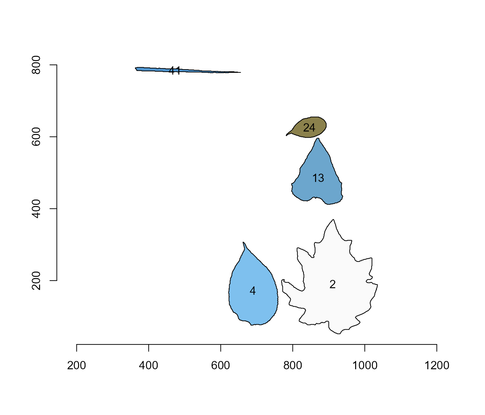
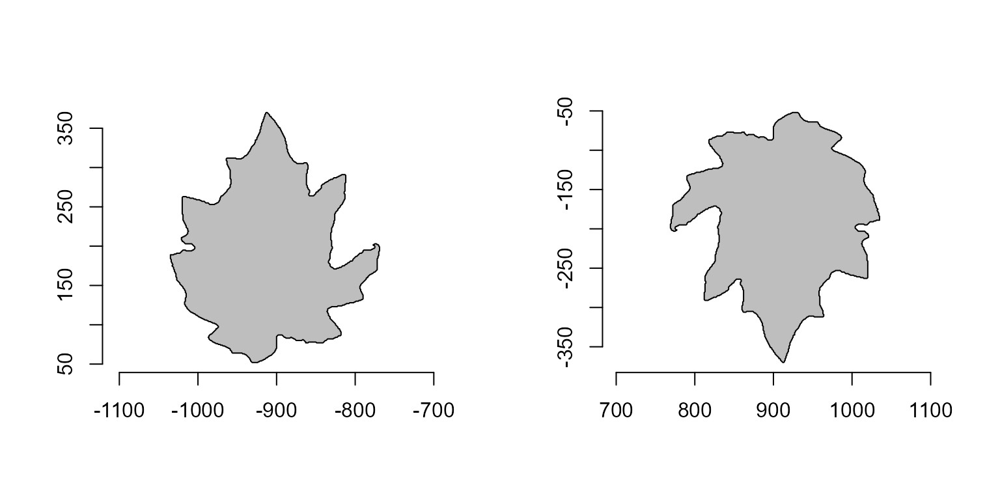
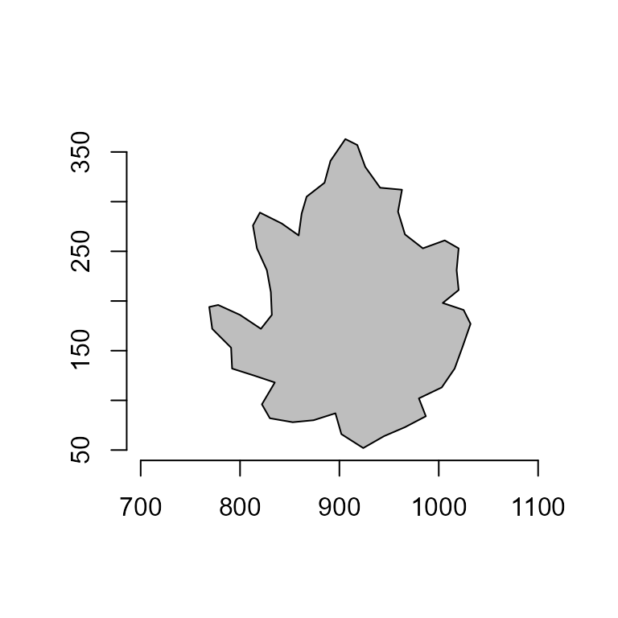
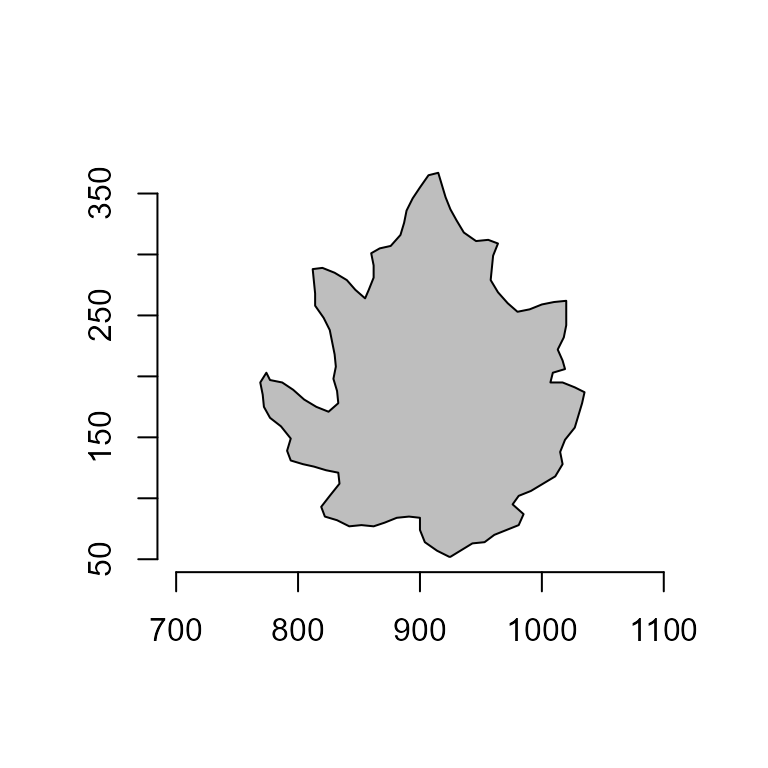
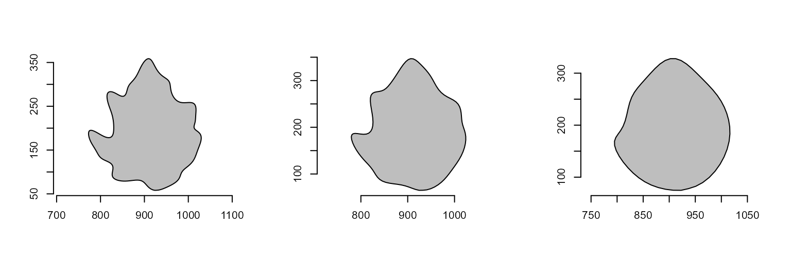

Getting started
A
polygonis a plane figure that is described by a finite number of straight-line segments connected to form a closed polygonal chain (Singer, 1993)1.
Given the above, we may conclude that image objects can be expressed
as polygons with n vertices. pliman has a set
of useful functions (draw_*()) to draw common shapes such
as circles, squares, triangles, rectangles and n-tagons.
Another group of poly_*() functions can be used to analyze
polygons. Let’s start with a simple example, related to the area and
perimeter of a square.
library(pliman)
#> |==========================================================|
#> | Tools for Plant Image Analysis (pliman 1.2.0) |
#> | Author: Tiago Olivoto |
#> | Type 'citation('pliman')' to know how to cite pliman |
#> | Type 'vignette('pliman_start')' for a short tutorial |
#> | Visit 'http://bit.ly/pkg_pliman' for a complete tutorial |
#> |==========================================================|
square <- draw_square(side = 1)
poly_area(square)
#> [1] 1
poly_perimeter(square)
#> [1] 4Now, Let’s see what happens when we start with a hexagon and increase the number of sides up to 1000.
shapes <- list(side6 <- draw_n_tagon(6, plot = FALSE),
side12 <- draw_n_tagon(12, plot = FALSE),
side24 <- draw_n_tagon(24, plot = FALSE),
side100 <- draw_n_tagon(100, plot = FALSE),
side500 <- draw_n_tagon(500, plot = FALSE),
side100 <- draw_n_tagon(1000, plot = FALSE))
plot_polygon(shapes, merge = FALSE)
poly_area(shapes)
#> [1] 2.598076 3.000000 3.105829 3.139526 3.141510 3.141572
poly_perimeter(shapes)
#> [1] 6.000000 6.211657 6.265257 6.282152 6.283144 6.283175Note that when \(n \to \infty\), the
sum of sides becomes the circumference of the circle, given by \(2\pi r\), and the area becomes \(\pi r^2\). This is cool, but
pliman is mainly designed to analyze plant image analysis.
So, why would we use polygons? Let’s see how we can use these functions
to obtain useful information.
link <- "https://raw.githubusercontent.com/TiagoOlivoto/tiagoolivoto/master/static/tutorials/pliman_lca/imgs/leaves.jpg"
leaves <- image_import(link, plot = TRUE)
cont <- object_contour(leaves, watershed = FALSE, index = "HI")
# plotting the polygon
plot_polygon(cont)
Object measures
Nice! We can use the contour of any object to obtain useful information related to its shape. To reduce the amount of output, I will only use five samples: 2, 4, 13, 24, and 35.
cont <- cont[c("2", "4", "13", "24", "36")]
plot_polygon(cont)
In the current version of pliman, you will be able to
compute the following measures. For more details, see Chen & Wang
(2005)2,
Claude (2008)3, and Montero et al. 20094.
Area
The area of a shape is computed using Shoelace Formula (Lee and Lim, 2017)5, as follows
\[ A=\frac{1}{2}\left|\sum_{i=1}^{n}\left(x_{i} y_{i+1}-x_{i+1}y_{i}\right)\right| \]
poly_area(cont)
#> 2 4 13 24 36
#> 45075.0 20793.5 15183.5 12095.5 2316.0Perimeter
The perimeter is computed as the sum of the euclidean distance
between every point of a shape. The distances can be obtained with
poly_distpts().
poly_perimeter(cont)
#> 2 4 13 24 36
#> 1290.1413 630.7128 565.7422 466.4874 237.4508
# perimeter of a circle with radius equals to 2
circle <- draw_circle(radius = 2, plot = FALSE)
poly_perimeter(circle)
#> [1] 12.56635
# check the result
2*pi*2
#> [1] 12.56637Radius
The radius of a pixel in the object contour is computed as its
distance to the object centroid (also called as ‘center of mass’). These
distances can be obtained with poly_centdist(). The
average, maximum and minimum radius can be obtained.
dists <- poly_centdist(cont)
# statistics for the radius
mean_list(dists)
#> 2 4 13 24 36
#> 119.55450 85.22870 72.13064 64.39723 30.99134
min_list(dists)
#> 2 4 13 24 36
#> 68.93836 62.14629 48.67098 48.21310 17.25115
max_list(dists)
#> 2 4 13 24 36
#> 171.20105 129.75938 108.46217 95.62495 52.42721
sd_list(dists)
#> 2 4 13 24 36
#> 20.94407 16.84946 14.62283 13.64961 10.33370
# average radius of the circle above
poly_centdist(circle) |> mean_list()
#> [1] 1.999998Length and width
The length and width of an object are computed with
poly_lw() as the difference between the maximum and minimum
of x and y coordinates after the object has
been aligned with poly_align().
aligned <- poly_align(cont)
# compute length and width
poly_lw(cont)
#> length width
#> 2 314.37766 265.87632
#> 4 235.44533 138.61494
#> 13 186.39012 140.53457
#> 24 184.07642 100.13720
#> 36 98.25528 40.66916Circularity, eccentricity, caliper, and elongation
Circularity measure (Montero et al. 2009)6 is also called shape compactness, or roundness measure of an object. It is given by \(C = P^2 / A\), where \(P\) is the perimeter and \(A\) is the area of the object.
poly_circularity(cont)
#> 2 4 13 24 36
#> 36.92656 19.13091 21.07974 17.99103 24.34494Since the above measure is dependent on the scale, the normalized circularity can be used. In this case, it is assumed to be unity for a circle. This measure is invariant under translation, rotation, scaling transformations, and dimensionless. It is given by: \(Cn = P^2 / 4 \pi A\)
poly_circularity_norm(cont)
#> 2 4 13 24 36
#> 2.938522 1.522390 1.677472 1.431680 1.937309
# normalized circularity for different shapes
draw_square(plot = FALSE) |> poly_circularity_norm()
#> [1] 1.27324
draw_circle(plot = FALSE) |> poly_circularity_norm()
#> [1] 1.000003poly_circularity_haralick() computes the Haralick’s
circularity (CH). The method is based on the computation of all the
Euclidean distances from the object centroid to each boundary pixel.
With this set of distances, the mean (\(m\)) and the standard deviation (\(s\)) are computed. These statistical
parameters are used on a ratio that calculates the circularity, CH, of a
shape, as \(CH = m/sd\)
poly_circularity_haralick(cont)
#> 2 4 13 24 36
#> 5.708275 5.058245 4.932743 4.717880 2.999055poly_convexity() Computes the convexity of a shape using
a ratio between the perimeter of the convex hull and the perimeter of
the polygon.
poly_convexity(cont)
#> 2 4 13 24 36
#> 0.6435196 0.8850799 0.7579630 0.9188307 0.7093135poly_eccentricity() Computes the eccentricity of a shape
using the ratio of the eigenvalues (inertia axes of coordinates).
poly_eccentricity(cont)
#> 2 4 13 24 36
#> 0.8333972 0.4217709 0.5991804 0.3995773 0.1949398poly_elongation() Computes the elongation of a shape as
1 - width / length
poly_elongation(cont)
#> 2 4 13 24 36
#> 0.1542773 0.4112648 0.2460192 0.4560020 0.5860868poly_caliper() Computes the caliper (Also called the
Feret’s diameter).
poly_caliper(cont)
#> 2 4 13 24 36
#> 318.56710 235.58650 188.21530 184.27154 98.27004Users can use the function poly_measures() to compute
most of the object measures in a single call.
(measures <- poly_measures(cont))
#> id x y area area_ch perimeter radius_mean radius_min
#> 2 1 910.8859 190.0833 45075.0 57540.0 1290.1413 119.55450 68.93836
#> 4 2 688.6980 171.6494 20793.5 21924.0 630.7128 85.22870 62.14629
#> 13 3 866.7525 482.7571 15183.5 16554.0 565.7422 72.13064 48.67098
#> 24 4 959.6320 622.0042 12095.5 12463.5 466.4874 64.39723 48.21310
#> 36 5 341.3717 703.9947 2316.0 2602.5 237.4508 30.99134 17.25115
#> radius_max radius_sd radius_ratio diam_mean diam_min diam_max caliper
#> 2 171.20105 20.94407 2.483393 239.10899 137.87672 342.4021 318.56710
#> 4 129.75938 16.84946 2.087967 170.45741 124.29258 259.5188 235.58650
#> 13 108.46217 14.62283 2.228477 144.26129 97.34197 216.9243 188.21530
#> 24 95.62495 13.64961 1.983381 128.79447 96.42620 191.2499 184.27154
#> 36 52.42721 10.33370 3.039056 61.98267 34.50230 104.8544 98.27004
#> length width solidity convexity elongation circularity
#> 2 314.37766 265.87632 0.7833681 0.6435196 0.1542773 36.92656
#> 4 235.44533 138.61494 0.9484355 0.8850799 0.4112648 19.13091
#> 13 186.39012 140.53457 0.9172103 0.7579630 0.2460192 21.07974
#> 24 184.07642 100.13720 0.9704738 0.9188307 0.4560020 17.99103
#> 36 98.25528 40.66916 0.8899135 0.7093135 0.5860868 24.34494
#> circularity_haralick circularity_norm eccentricity
#> 2 3.291546 2.938522 0.8333972
#> 4 3.688325 1.522390 0.4217709
#> 13 3.328425 1.677472 0.5991804
#> 24 3.532195 1.431680 0.3995773
#> 36 1.669406 1.937309 0.1949398If the image resolution is known, then, the measures can be corrected
with get_measures(). The image resolution can be obtained
using a known distance in the image. In the example, the white square
has a side of 5 cm. So, using dpi() the resolution can be
obtained. In this case, the dpi is ~50.
(measures_cor <- get_measures(measures, dpi = 50))
#> id x y area area_ch perimeter radius_mean radius_min
#> 2 1 910.886 190.083 116.322 148.490 65.539 6.073 3.502
#> 4 2 688.698 171.649 53.661 56.578 32.040 4.330 3.157
#> 13 3 866.753 482.757 39.183 42.720 28.740 3.664 2.472
#> 24 4 959.632 622.004 31.214 32.164 23.698 3.271 2.449
#> 36 5 341.372 703.995 5.977 6.716 12.063 1.574 0.876
#> radius_max radius_sd radius_ratio diam_mean diam_min diam_max caliper length
#> 2 8.697 1.064 0.126 12.147 7.004 17.394 16.183 15.970
#> 4 6.592 0.856 0.106 8.659 6.314 13.184 11.968 11.961
#> 13 5.510 0.743 0.113 7.328 4.945 11.020 9.561 9.469
#> 24 4.858 0.693 0.101 6.543 4.898 9.715 9.361 9.351
#> 36 2.663 0.525 0.154 3.149 1.753 5.327 4.992 4.991
#> width solidity convexity elongation circularity circularity_haralick
#> 2 13.507 0.783 0.644 0.154 36.927 3.292
#> 4 7.042 0.948 0.885 0.411 19.131 3.688
#> 13 7.139 0.917 0.758 0.246 21.080 3.328
#> 24 5.087 0.970 0.919 0.456 17.991 3.532
#> 36 2.066 0.890 0.709 0.586 24.345 1.669
#> circularity_norm eccentricity
#> 2 2.939 0.833
#> 4 1.522 0.422
#> 13 1.677 0.599
#> 24 1.432 0.400
#> 36 1.937 0.195A little bit more!
Some useful functions can be used to manipulate coordinates. In the
following example, I will show some features implemented in
pliman. Just for simplicity, I will use only object 2.
o2 <- cont[["2"]]
plot_polygon(o2)
Rotate polygons
poly_rotate() can be used to rotate the polygon
coordinates by a angle (0-360 degrees) in the trigonometric
direction (anti-clockwise).
rot <- poly_rotate(o2, angle = 45)
Flip polygons
poly_flip_x() and poly_flip_y() can be used
to flip shapes along the x and y axis, respectively.
flip <- list(
fx = poly_flip_x(o2),
fy = poly_flip_y(o2)
)
plot_polygon(flip, merge = FALSE, aspect_ratio = 1)
Sample points
poly_sample() samples n coordinates among
existing points, and poly_sample_prop() samples a
proportion of coordinates among existing.
# sample 50 coordinates
poly_sample(o2, n = 50) |> plot_polygon()
# sample 10% of the coordinates
poly_sample_prop(o2, prop = 0.1) |> plot_polygon()
Smooth polygons
poly_smooth() smooths a polygon contour by combining
sampling prop coordinate points and interpolating them
using vertices vertices.
smooths <-
list(
s1 <- poly_smooth(o2, prop = 0.2, plot = FALSE),
s2 <- poly_smooth(o2, prop = 0.1, plot = FALSE),
s1 <- poly_smooth(o2, prop = 0.05, plot = FALSE)
)
plot_polygon(smooths, merge = FALSE, ncol = 3)
Add noise to a polygon
poly_jitter() adds a small amount of noise to a set of
point coordinates. See base::jitter() for more details.
poly_jitter(o2, noise_x = 5, noise_y = 5) |> plot_polygon()